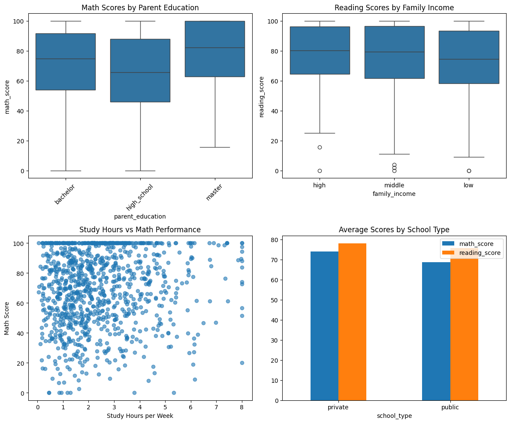

03.07. LLM-Based Hypothesis Generation💡¶
📍 Download notebook and session files
In today’s lab session, we’ll implement and explore different LLM-based approaches for scientific hypothesis generation. Building on the concepts from our lecture, we’ll work with synthetical social science data to generate, refine, and qualitatively evaluate hypotheses about dependency of educational outcomes from socioeconomic factors.
Our plan for today:
Prerequisites¶
To start with the tutorial, complete the steps Prerequisites, Environment Setup, and Getting API Key from the LLM Inference Guide.
Today, we have more packages so we’ll use the requirements file to install the dependencies:
pip install -r requirements.txt
from langchain_nvidia_ai_endpoints import ChatNVIDIA
from langchain_core.rate_limiters import InMemoryRateLimiter
# read system variables
import os
import dotenv
dotenv.load_dotenv() # that loads the .env file variables into os.environ
True
# choose any model, catalogue is available under https://build.nvidia.com/models
MODEL_NAME = "qwen/qwq-32b"
# this rate limiter will ensure we do not exceed the rate limit
# of 40 RPM given by NVIDIA
rate_limiter = InMemoryRateLimiter(
requests_per_second=30 / 60, # 30 requests per minute to be sure
check_every_n_seconds=0.1, # wake up every 100 ms to check whether allowed to make a request,
max_bucket_size=4, # controls the maximum burst size
)
llm = ChatNVIDIA(
model=MODEL_NAME,
api_key=os.getenv("NVIDIA_API_KEY"),
temperature=0.5, # warm up this time
rate_limiter=rate_limiter # bind the rate limiter
)
/Users/maksimshmalts/Documents/Course-LLM-based-Assistants/llm-based-assistants/sessions/block2_core_topics/pt2_science/0307/.venv/lib/python3.12/site-packages/langchain_nvidia_ai_endpoints/_common.py:217: UserWarning: Found qwen/qwq-32b in available_models, but type is unknown and inference may fail.
warnings.warn(
Since we will be generating hypotheses here, we’ll define a structured output for them here to unify their format.
from pydantic import BaseModel, Field
class Hypothesis(BaseModel):
statement: str = Field(..., description="Complete hypothesis statement in natural language")
condition: str = Field(..., description="The specific condition where the hypothesis applies")
outcome: str = Field(..., description="The expected outcome or dependent variable")
mechanism: str = Field(..., description="Proposed underlying mechanism or explanation")
confidence: float = Field(..., ge=0, le=10, description="Confidence level from 0-10")
class Hypotheses(BaseModel):
hypotheses: list[Hypothesis] = Field(..., description="List of generated hypotheses")
def __str__(self):
return "\n".join([
f"{hypothesis.statement} (Confidence: {hypothesis.confidence})"
for hypothesis in sorted(self.hypotheses, key=lambda x: x.confidence, reverse=True)
])
def __len__(self):
return len(self.hypotheses)
s_llm = llm.with_structured_output(Hypotheses)
/Users/maksimshmalts/Documents/Course-LLM-based-Assistants/llm-based-assistants/sessions/block2_core_topics/pt2_science/0307/.venv/lib/python3.12/site-packages/langchain_nvidia_ai_endpoints/chat_models.py:816: UserWarning: Model 'qwen/qwq-32b' is not known to support structured output. Your output may fail at inference time.
warnings.warn(
1. Data Generation 📕
To save the time and storage, we will use a toy synthetic dataset that will include various socioeconomic and demographic factors and educational outcome data.
At first, we will just generate some random data from suitable distributions, and then soe synthetic correlations will be added to those.
import numpy as np
np.random.seed(42) # for reproducibility
N = 1000 # number of students
# generate
data = {
# int from 1 to 1000
"student_id": range(1, N + 1),
# normal distribution with a mean of 72 and a SD of 15;
# this will mostly cluster around 72 but allow for some variation
# at both sides
"math_score": np.random.normal(70, 30, N),
# normal distribution with a mean of 78 and a SD of 12;
# this will mostly cluster around 78 but allow for some variation
# at both sides
"reading_score": np.random.normal(75, 25, N),
# one of the three categories with probs 0.4, 0.4, 0.2, respectively
"parent_education": np.random.choice(["high_school", "bachelor", "master"], N, p=[0.4, 0.4, 0.2]),
# one of the three categories with probs 0.35, 0.5, 0.15, respectively
"family_income": np.random.choice(["low", "middle", "high"], N, p=[0.35, 0.5, 0.15]),
# gamma distr is right-skewed which is suitable for study hours;
# it is non-negative and has a tail on the right;
# so this distribution will mostly cluster low but allow high values
"study_hours": np.random.gamma(2, 1.25, N),
# one of the two categories with probs 0.8, 0.2, respectively
"school_type": np.random.choice(["public", "private"], N, p=[0.8, 0.2]),
# normal distribution with a mean of 25 and a SD of 5;
# this will mostly cluster around 72 but allow for slight variation
# at both sides
"class_size": np.random.normal(25, 5, N),
# conceptual (not mathematical!) opposite of the Gamma distribution:
# left-skewed, non-negative, and has a tail on the left,
# will mostly cluster high but allow low values
"attendance_rate": np.random.beta(8, 2, N) * 100
}
import pandas as pd
df = pd.DataFrame(data)
df.head()
| student_id | math_score | reading_score | parent_education | family_income | study_hours | school_type | class_size | attendance_rate | |
|---|---|---|---|---|---|---|---|---|---|
| 0 | 1 | 84.901425 | 109.983886 | bachelor | low | 4.326753 | public | 29.015774 | 48.721447 |
| 1 | 2 | 65.852071 | 98.115842 | high_school | middle | 3.218203 | public | 17.622943 | 71.534313 |
| 2 | 3 | 89.430656 | 76.490759 | high_school | middle | 8.450355 | private | 30.112564 | 79.582200 |
| 3 | 4 | 115.690896 | 58.826581 | high_school | low | 0.491749 | private | 18.681155 | 87.997108 |
| 4 | 5 | 62.975399 | 92.455583 | master | middle | 0.874255 | public | 18.147205 | 69.268819 |
# add some realistic correlations
# higher parent education correlates with income and scores
bach_ind = df["parent_education"] == "bachelor"
df.loc[bach_ind, "family_income"] = np.random.choice(["low", "middle", "high"], bach_ind.sum(), p=[0.1, 0.5, 0.4])
df.loc[bach_ind, "math_score"] += np.random.normal(6, 2)
df.loc[bach_ind, "reading_score"] += np.random.normal(4, 2)
master_ind = df["parent_education"] == "master"
df.loc[master_ind, "family_income"] = np.random.choice(["middle", "high"], master_ind.sum(), p=[0.35, 0.65])
df.loc[master_ind, "math_score"] += np.random.normal(8, 3)
df.loc[master_ind, "reading_score"] += np.random.normal(6, 2)
# private schools tend to have smaller classes and higher scores
priv_ind = df["school_type"] == "private"
df.loc[priv_ind, "class_size"] *= 0.7
df.loc[priv_ind, "math_score"] += np.random.normal(5, 2)
df.loc[priv_ind, "reading_score"] += np.random.normal(4, 2)
# less study hours and less attendance correlate with lower scores
priv_ind = (df["study_hours"] < 2) | (df["attendance_rate"] < 50)
df.loc[priv_ind, "math_score"] -= np.random.normal(7, 4)
df.loc[priv_ind, "reading_score"] -= np.random.normal(6, 3)
# now add some contradictions to see if the LLM can handle them
# higher parent education in low-income families correlates with lower scores
# (due to stress/pressure/unrealistic expectations)
low_income_bach_ind = (df["family_income"] == "low") & (df["parent_education"] == "bachelor")
df.loc[low_income_bach_ind, "math_score"] -= np.random.normal(6, 2, low_income_bach_ind.sum())
df.loc[low_income_bach_ind, "reading_score"] -= np.random.normal(5, 2, low_income_bach_ind.sum())
# some private school students with high study hours show surprisingly low performance
# (potentially due to over-pressure or ineffective study methods)
private_high_study_ind = (df["school_type"] == "private") & (df["study_hours"] > 5)
df.loc[private_high_study_ind, "math_score"] -= np.random.normal(8, 3, private_high_study_ind.sum())
df.loc[private_high_study_ind, "reading_score"] -= np.random.normal(6, 2, private_high_study_ind.sum())
# adjust the scores and class sizes to be within realistic bounds
df["math_score"] = np.clip(df["math_score"], 0, 100)
df["reading_score"] = np.clip(df["reading_score"], 0, 100)
df["study_hours"] = np.clip(df["study_hours"], 0, 8)
df["class_size"] = np.clip(df["class_size"], 10, 40).astype(int)
df.head()
| student_id | math_score | reading_score | parent_education | family_income | study_hours | school_type | class_size | attendance_rate | |
|---|---|---|---|---|---|---|---|---|---|
| 0 | 1 | 83.982222 | 100.000000 | bachelor | high | 4.326753 | public | 29 | 48.721447 |
| 1 | 2 | 65.852071 | 98.115842 | high_school | middle | 3.218203 | public | 17 | 71.534313 |
| 2 | 3 | 83.825992 | 74.378672 | high_school | middle | 8.000000 | private | 21 | 79.582200 |
| 3 | 4 | 100.000000 | 59.251830 | high_school | low | 0.491749 | private | 13 | 87.997108 |
| 4 | 5 | 69.846704 | 96.304558 | master | high | 0.874255 | public | 18 | 69.268819 |
# basic statistics
df.describe()
| student_id | math_score | reading_score | study_hours | class_size | attendance_rate | |
|---|---|---|---|---|---|---|
| count | 1000.000000 | 1000.000000 | 1000.000000 | 1000.000000 | 1000.000000 | 1000.000000 |
| mean | 500.500000 | 69.703835 | 76.093220 | 2.445535 | 22.947000 | 79.606501 |
| std | 288.819436 | 25.003453 | 21.178761 | 1.639654 | 5.696371 | 11.997461 |
| min | 1.000000 | 0.000000 | 0.000000 | 0.037872 | 10.000000 | 29.697055 |
| 25% | 250.750000 | 51.990136 | 61.531379 | 1.226246 | 19.000000 | 72.272145 |
| 50% | 500.500000 | 72.795777 | 78.980705 | 2.086426 | 23.000000 | 81.720291 |
| 75% | 750.250000 | 91.800173 | 95.922022 | 3.338343 | 27.000000 | 88.972897 |
| max | 1000.000000 | 100.000000 | 100.000000 | 8.000000 | 39.000000 | 99.376582 |
import matplotlib.pyplot as plt
import seaborn as sns
# some visualizations
fig, axes = plt.subplots(2, 2, figsize=(12, 10))
# math scores by parent education
sns.boxplot(data=df, x="parent_education", y="math_score", ax=axes[0,0])
axes[0,0].set_title("Math Scores by Parent Education")
axes[0,0].tick_params(axis="x", rotation=45)
# reading scores by family income
sns.boxplot(data=df, x="family_income", y="reading_score", ax=axes[0,1])
axes[0,1].set_title("Reading Scores by Family Income")
# study hours vs math score
axes[1,0].scatter(df["study_hours"], df["math_score"], alpha=0.6)
axes[1,0].set_xlabel("Study Hours per Week")
axes[1,0].set_ylabel("Math Score")
axes[1,0].set_title("Study Hours vs Math Performance")
# school type comparison
school_comparison = df.groupby("school_type")[["math_score", "reading_score"]].mean()
school_comparison.plot(kind="bar", ax=axes[1,1])
axes[1,1].set_title("Average Scores by School Type")
axes[1,1].tick_params(axis="x", rotation=0)
plt.tight_layout()
plt.show()

2. Straightforward Generation 💥
This approach directly asks the LLM to analyze data patterns and generate hypotheses without additional context. The model examines the raw data sample and identifies potential relationships based on observed correlations. This represents the most basic form of hypothesis generation, relying solely on the LLM’s ability to detect patterns in numerical and categorical data and serves as a baseline to compare against more sophisticated prompting techniques.
Since we generate hypotheses in a straightforward manner, we need nothing much as just a prompt.
from tqdm.notebook import tqdm
straightforward_template = """
You are a research scientist analyzing educational data. Below is a sample of student performance data with various demographic and behavioral variables:
==================
{data_sample}
==================
Based on this data, propose hypotheses that could explain patterns in student academic performance (math_score and reading_score). \
The hypotheses should describe all observed correlations and contradictions. Suggest 3-5 hypotheses. \
The hypotheses should describe potential causal relationships between the factors in the data and the academic performance scores: \
"If X, then the scores are generally higher/lower because Y."
"""
results_straightforward = {}
for sample_size in tqdm([25, 100, 250]):
data_sample = df.sample(sample_size).to_string(index=False) # sample without index for better readability
# generate hypotheses
hypotheses = s_llm.invoke(straightforward_template.format(data_sample=data_sample))
# store the results
results_straightforward[sample_size] = hypotheses
def print_hypotheses(hypotheses: dict):
for sample_size, hyp in hypotheses.items():
print(f"Sample Size: {sample_size}")
print(hyp)
print("\n" + "=" * 50 + "\n")
print_hypotheses(results_straightforward)
Sample Size: 25
If students have higher attendance rates (e.g., above 90%), then their math and reading scores are generally higher because consistent attendance ensures they receive all instructional content and participate in classroom activities. (Confidence: 0.8)
If students come from families with higher parental education (e.g., bachelor's degree or higher), then their math and reading scores are generally higher because parental education level is associated with greater access to educational resources and higher expectations for academic success. (Confidence: 0.7)
If students attend schools with smaller class sizes (e.g., under 20 students), then their math and reading scores are generally higher because smaller classes allow for more individualized instruction and better teacher-student interaction. (Confidence: 0.6)
If students attend private schools, their reading scores are higher than public school peers, but math scores show no significant difference, possibly due to curriculum focus or resource allocation differences between school types. (Confidence: 0.6)
If students study more hours per week (e.g., over 5 hours), their math scores improve but reading scores remain stable, suggesting math requires more deliberate practice while reading skills might be more context-dependent or less impacted by study time. (Confidence: 0.5)
==================================================
Sample Size: 100
Hypothesis 1: Students with parents who have a higher level of education (e.g., bachelor's degree or master's) tend to have higher math and reading scores compared to those with parents who only completed high school. This is because parental education level correlates with greater access to educational resources and higher expectations for academic success. (Confidence: 0.8)
Hypothesis 2: Students attending private schools have higher math scores but lower reading scores than public school students. This discrepancy may arise from private schools focusing more on math curricula while neglecting reading comprehension, or differing teaching methodologies between the two school types. (Confidence: 0.7)
Hypothesis 4: Students from families with higher income levels (marked as 'high') show higher math scores but inconsistent reading scores compared to lower income groups. This might indicate that families invest more in math-focused tutoring or enrichment programs, while reading skills are maintained through general socioeconomic advantages. (Confidence: 0.65)
Hypothesis 3: Students in schools with smaller class sizes (below 20 students) tend to have higher reading scores but lower math scores compared to larger classes. The smaller environment might enhance reading through individual attention, while math performance could be affected by less peer interaction that aids problem-solving in larger groups. (Confidence: 0.6)
Hypothesis 5: Students with higher study hours per week have higher math scores but lower reading scores. This could suggest that students prioritize math study time at the expense of reading practice, or that reading skills are more dependent on habitual reading outside structured study sessions. (Confidence: 0.6)
==================================================
Sample Size: 250
If students have parents with higher education levels (parent_education = master), then their math and reading scores are generally higher because parental education correlates with greater academic support and resources at home. (Confidence: 0.8)
If students attend schools with smaller class sizes (class_size < 20), then their math scores are generally higher because smaller classes allow for more individualized instruction and teacher attention. (Confidence: 0.7)
If students have lower attendance rates (attendance_rate < 70%), then their reading scores are generally lower because consistent attendance is critical for maintaining comprehension in language-based subjects. (Confidence: 0.7)
If schools have higher income families (family_income = high), then math scores are higher due to access to supplementary educational resources and enrichment activities outside school. (Confidence: 0.65)
If students have higher study hours (study_hours > 5), then their math and reading scores are generally higher due to increased time spent on academic preparation and practice. (Confidence: 0.6)
==================================================
3. Literature-Conditioned Generation 📗
Here we provide the LLM with relevant research abstracts alongside the data to guide hypothesis generation – basically, RAG on scientific material. This approach mimics how human researchers build upon existing knowledge when forming new hypotheses. The model can identify gaps in current literature, propose extensions to existing findings, or suggest novel research directions that complement established results.
Here, there is a single component to be added: namely, the literature fragments. Since RAG is not the focus of this lab, we will simulate extracted abstracts in a hard-code manner.
mock_literature = [
{
"title": "Socioeconomic Status and Academic Achievement: A Meta-Analysis",
"abstract": "This meta-analysis of 142 studies (N = 582,696) examined the relationship between socioeconomic status (SES) and academic achievement. Results showed a moderate positive correlation (r = .31) between family income and standardized test scores. Parent education level was the strongest predictor of student achievement, with master's degree holders' children scoring 12-15 points higher on average than high school graduates' children. The effect was stronger for mathematics than reading comprehension."
},
{
"title": "Private vs. Public Schools: Achievement Gaps and Class Size Effects",
"abstract": "Analysis of 50,000 students across 500 schools revealed that private school students outperformed public school students by 8-12 points on standardized tests. However, when controlling for family income and parent education, the gap reduced to 3-5 points. Class size showed a negative correlation with achievement (r = -.23), with optimal class sizes between 15-20 students. The effect was more pronounced in mathematics than in language arts."
},
{
"title": "The Role of Study Habits and Attendance in Academic Success",
"abstract": "Longitudinal study of 1,200 high school students found that study hours per week correlated positively with GPA (r = .28). Students with less than 2 hours of weekly study time showed significantly lower performance across all subjects. Attendance rate was strongly correlated with achievement (r = .45), with students below 80% attendance showing marked declines in both mathematics and reading scores. The effects were cumulative and more pronounced over time."
},
# irrelevant literature
{
"title": "Urban-Rural Educational Disparities: Resource Access and Achievement",
"abstract": "Comparative study of 10,000 students across urban, suburban, and rural districts found significant achievement gaps. Urban students had greater access to tutoring services (average 2.1 hours/week vs. 0.8 for rural students) and scored 6-8 points higher on standardized tests. However, rural students from highly educated families sometimes showed unexpected underperformance, suggesting resource constraints despite parental education. Suburban students consistently performed highest across all measures."
},
# literature about the contradictions: the expectation is, a new hypothesis will be generated with that
{
"title": "The Paradox of Low-Income, Highly Educated Families: When Parental Education Fails to Predict Achievement",
"abstract": "This study of 15,000 students examined the relationship between parental education and academic achievement across different income levels. While the general trend shows positive correlations between parent education and student performance, we identified a concerning paradox: children from low-income families with master's educated parents showed significantly lower achievement than expected (effect size d = -0.42 for math, -0.35 for reading). Qualitative interviews revealed that financial stress combined with high parental expectations created performance anxiety and family tension. These families often lacked the financial resources to match their educational aspirations, leading to frustration and academic pressure that negatively impacted student outcomes. The findings suggest that parental education alone is insufficient when not accompanied by adequate economic resources."
},
{
"title": "The Diminishing Returns of Academic Pressure: Over-Studying in Elite Educational Settings",
"abstract": "Analysis of 8,500 private school students revealed an unexpected inverse relationship between excessive study time and academic performance. Students who reported more than 4 hours of daily study time showed decreased achievement compared to peers with moderate study schedules (2-3 hours), with a notable 6-8 point decline in standardized test scores. The phenomenon was particularly pronounced in competitive private school environments where academic pressure was highest. Longitudinal data indicated that over-studying led to burnout, decreased motivation, and paradoxically, less effective learning strategies. The study suggests an optimal study duration beyond which additional time becomes counterproductive, challenging the common assumption that more study time always leads to better outcomes. These findings highlight the importance of balanced academic approaches rather than intensive study regimens."
}
]
literature_text = "\n\n".join([f"Title: {paper['title']}\nAbstract: {paper['abstract']}" for paper in mock_literature])
print(literature_text)
Title: Socioeconomic Status and Academic Achievement: A Meta-Analysis
Abstract: This meta-analysis of 142 studies (N = 582,696) examined the relationship between socioeconomic status (SES) and academic achievement. Results showed a moderate positive correlation (r = .31) between family income and standardized test scores. Parent education level was the strongest predictor of student achievement, with master's degree holders' children scoring 12-15 points higher on average than high school graduates' children. The effect was stronger for mathematics than reading comprehension.
Title: Private vs. Public Schools: Achievement Gaps and Class Size Effects
Abstract: Analysis of 50,000 students across 500 schools revealed that private school students outperformed public school students by 8-12 points on standardized tests. However, when controlling for family income and parent education, the gap reduced to 3-5 points. Class size showed a negative correlation with achievement (r = -.23), with optimal class sizes between 15-20 students. The effect was more pronounced in mathematics than in language arts.
Title: The Role of Study Habits and Attendance in Academic Success
Abstract: Longitudinal study of 1,200 high school students found that study hours per week correlated positively with GPA (r = .28). Students with less than 2 hours of weekly study time showed significantly lower performance across all subjects. Attendance rate was strongly correlated with achievement (r = .45), with students below 80% attendance showing marked declines in both mathematics and reading scores. The effects were cumulative and more pronounced over time.
Title: Urban-Rural Educational Disparities: Resource Access and Achievement
Abstract: Comparative study of 10,000 students across urban, suburban, and rural districts found significant achievement gaps. Urban students had greater access to tutoring services (average 2.1 hours/week vs. 0.8 for rural students) and scored 6-8 points higher on standardized tests. However, rural students from highly educated families sometimes showed unexpected underperformance, suggesting resource constraints despite parental education. Suburban students consistently performed highest across all measures.
Title: The Paradox of Low-Income, Highly Educated Families: When Parental Education Fails to Predict Achievement
Abstract: This study of 15,000 students examined the relationship between parental education and academic achievement across different income levels. While the general trend shows positive correlations between parent education and student performance, we identified a concerning paradox: children from low-income families with master's educated parents showed significantly lower achievement than expected (effect size d = -0.42 for math, -0.35 for reading). Qualitative interviews revealed that financial stress combined with high parental expectations created performance anxiety and family tension. These families often lacked the financial resources to match their educational aspirations, leading to frustration and academic pressure that negatively impacted student outcomes. The findings suggest that parental education alone is insufficient when not accompanied by adequate economic resources.
Title: The Diminishing Returns of Academic Pressure: Over-Studying in Elite Educational Settings
Abstract: Analysis of 8,500 private school students revealed an unexpected inverse relationship between excessive study time and academic performance. Students who reported more than 4 hours of daily study time showed decreased achievement compared to peers with moderate study schedules (2-3 hours), with a notable 6-8 point decline in standardized test scores. The phenomenon was particularly pronounced in competitive private school environments where academic pressure was highest. Longitudinal data indicated that over-studying led to burnout, decreased motivation, and paradoxically, less effective learning strategies. The study suggests an optimal study duration beyond which additional time becomes counterproductive, challenging the common assumption that more study time always leads to better outcomes. These findings highlight the importance of balanced academic approaches rather than intensive study regimens.
literature_template = """
You are a research scientist analyzing educational data. Below is a sample of student performance data with various demographic and behavioral variables:
==================
{data_sample}
==================
Based on this data, propose hypotheses that could explain patterns in student academic performance (math_score and reading_score). \
The hypotheses should describe all observed correlations and contradictions. Suggest 3-5 hypotheses. \
The hypotheses should describe potential causal relationships between the factors in the data and the academic performance scores: \
"If X, then the scores are generally higher/lower because Y."
For that, you will be provided with relevant literature abstracts that may help you in hypothesis generation:
==================
{literature_text}
==================
"""
results_literature = {}
for sample_size in tqdm([25, 100, 250]):
data_sample = df.sample(sample_size).to_string(index=False) # sample without index for better readability
# generate hypotheses
hypotheses = s_llm.invoke(literature_template.format(data_sample=data_sample, literature_text=literature_text))
# store the results
results_literature[sample_size] = hypotheses
print_hypotheses(results_literature)
Sample Size: 25
If students have attendance rates below 80%, then their math and reading scores are significantly lower because consistent school attendance is critical for maintaining learning continuity and participation in instructional activities. (Confidence: 0.9)
If students attend private schools with smaller class sizes (15-20 students), then their math and reading scores are generally higher because private schools often have more resources to maintain optimal class sizes, which allows for more individualized instruction. (Confidence: 0.85)
If students' parents have higher education levels (bachelor/master), then their math scores are significantly higher than those with less-educated parents because parental educational attainment strongly correlates with math-specific academic support and expectations. (Confidence: 0.85)
If students come from low-income families with highly educated parents (master's degree), then their math and reading scores are lower than expected because financial stress and unmet educational aspirations create anxiety and resource limitations that hinder academic performance. (Confidence: 0.8)
If students have study hours exceeding 4 hours daily, then their math and reading scores are lower due to burnout and ineffective learning strategies caused by excessive academic pressure. (Confidence: 0.75)
==================================================
Sample Size: 100
Hypothesis 1: Students with higher parental education (e.g., master's degree) will have higher math and reading scores than those with parents who only completed high school, because parental education level is the strongest predictor of academic success as shown in the meta-analysis. However, this advantage may be diminished for low-income families due to resource constraints and stress, as seen in the paradox study. (Confidence: 0.9)
Hypothesis 2: Students in private schools will show higher math scores compared to public school peers, but this gap narrows when considering family income and parent education. The optimal class size (15-20 students) is associated with better performance, particularly in math, as smaller classes allow more individualized instruction. (Confidence: 0.85)
Hypothesis 3: Students with attendance rates above 80% will have significantly better scores in both subjects due to consistent classroom exposure. However, excessive study hours (>4 hours/week) in private schools may lead to lower scores because of burnout, contradicting the assumption that more study time always improves performance. (Confidence: 0.8)
Hypothesis 4: Family income has a moderate positive correlation with scores, especially in math. However, low-income students with highly educated parents may underperform due to resource limitations and stress, creating an unexpected gap despite parental educational attainment. (Confidence: 0.8)
Hypothesis 5: Urban students may have higher scores due to better resource access, but suburban students consistently outperform all groups. Rural students with highly educated parents paradoxically underperform, suggesting that geographic factors interact with family resources in complex ways. (Confidence: 0.75)
==================================================
Sample Size: 250
Hypothesis 1: Students from families with higher income and parents with advanced degrees (e.g., master's) will have higher math scores compared to reading scores due to the stronger correlation between socioeconomic factors and math performance, as observed in the meta-analysis. (Confidence: 0.9)
Hypothesis 2: Private schools with smaller class sizes (≤20 students) will show higher academic performance than public schools, but this advantage diminishes when controlling for income and parent education. However, some private schools with very small classes (≤15) might have even better results due to individualized attention. (Confidence: 0.85)
Hypothesis 3: Students with attendance rates below 80% will have significantly lower scores in both math and reading, especially in reading, due to cumulative learning loss from missed instruction. This effect is more pronounced in students with already lower study hours. (Confidence: 0.8)
Hypothesis 4: Low-income students with highly educated parents (master's) will underperform relative to their socioeconomic peers due to the paradox of pressure: financial stress combined with high expectations creates anxiety that undermines academic performance. (Confidence: 0.8)
Hypothesis 5: Students in private schools studying more than 4 hours daily will have lower math scores than those with moderate study hours (2-3 hours) due to over-studying burnout and decreased learning efficiency in high-pressure environments. (Confidence: 0.75)
==================================================
Interesting findings:¶
The confidence is consistently better
The contradictions are now (partially) found:
Hypothesis 5: Students in private schools studying more than 4 hours daily will have lower math scores than those with moderate study hours (2-3 hours) due to over-studying burnout and decreased learning efficiency in high-pressure environments. (Confidence: 0.75)(250)Some new findings related to the contradictions now override some previous statements:
If students have higher study hours (study_hours > 5), then their math and reading scores are generally higher due to increased time spent on academic preparation and practice. (Confidence: 0.6)from straightforward generation (250) vsIf students have study hours exceeding 4 hours daily, then their math and reading scores are lower due to burnout and ineffective learning strategies caused by excessive academic pressure. (Confidence: 0.75)with literature (25)…?
4. Cross-Domain Analogy Generation 🧬⚛️
This technique encourages the LLM to draw insights from other fields like economics, psychology, and biology to generate novel hypotheses about educational achievement. By thinking analogically, the model can apply successful patterns or principles from one domain to another, potentially uncovering innovative explanations. For example, the model might try to explain the effect through biological competition.
x_template = """
You are a research scientist analyzing educational data. Below is a sample of student performance data with various demographic and behavioral variables:
==================
{data_sample}
==================
Based on this data, propose hypotheses that could explain patterns in student academic performance (math_score and reading_score). \
The hypotheses should describe all observed correlations and contradictions. Suggest 3-5 hypotheses. \
The hypotheses should describe potential causal relationships between the factors in the data and the academic performance scores: \
"If X, then the scores are generally higher/lower because Y."
Consider patterns and principles from other domains that might apply to educational achievement.
For example, you can think about analogous patterns from these domains:
- Economics (market dynamics, resource allocation, investment returns)
- Biology (ecosystem dynamics, resource competition, adaptation)
- Business (performance optimization, resource management, team dynamics)
"""
results_x = {}
for sample_size in tqdm([25, 100, 250]):
data_sample = df.sample(sample_size).to_string(index=False) # sample without index for better readability
# generate hypotheses
hypotheses = s_llm.invoke(x_template.format(data_sample=data_sample))
# store the results
results_x[sample_size] = hypotheses
print_hypotheses(results_x)
Sample Size: 25
Hypothesis 1: Students with higher parental education (e.g., bachelor's/master's degree) tend to have higher math and reading scores because parental education level correlates with greater access to educational resources and higher expectations, similar to how economic capital investment leads to better returns in market dynamics. (Confidence: 0.8)
Hypothesis 4: Students with consistent attendance (attendance_rate above 85%) show higher math scores due to less disruption in learning continuity, akin to ecosystem stability where consistent resource availability leads to better adaptation outcomes. (Confidence: 0.75)
Hypothesis 2: Students in private schools with smaller class sizes (e.g., under 20 students) perform better academically due to increased individualized attention, analogous to how smaller team sizes in business improve productivity through reduced competition for resources. (Confidence: 0.7)
Hypothesis 3: Higher family income levels correlate with better reading scores but not math scores because families with higher income may prioritize language-rich environments (books, cultural exposure) over math-focused resources, similar to how market investments might be allocated unevenly based on perceived value. (Confidence: 0.65)
Hypothesis 5: Students studying more hours (study_hours above 2 hours) have lower math scores but higher reading scores because excessive study time may lead to burnout in quantitative subjects, while reading comprehension benefits from sustained practice, similar to overtraining in sports versus skill mastery through repetition. (Confidence: 0.6)
==================================================
Sample Size: 100
Hypothesis 1: Students in schools with smaller class sizes (class_size) tend to have higher math and reading scores because of increased individualized attention and teaching resources per student, similar to how smaller teams in business can optimize resource allocation for better outcomes. (Confidence: 0.8)
Hypothesis 2: Higher family_income levels correlate with higher academic scores due to access to supplementary educational resources and stable environments, analogous to economic investment in human capital yielding returns. (Confidence: 0.7)
Hypothesis 3: Students with parents who have higher education (parent_education) perform better academically because of enriched learning environments and higher educational expectations, mirroring the concept of cultural capital in sociology. (Confidence: 0.65)
Hypothesis 4: Students attending private schools (school_type) may have lower scores in some cases due to selection bias (e.g., higher study_hours but lower scores), suggesting that factors like pressure or resource allocation inefficiencies could counteract advantages. (Confidence: 0.6)
Hypothesis 5: Excessive study_hours (above 5 hours) might lead to diminishing returns or burnout, resulting in lower scores, similar to over-investment in a single resource without balancing other factors in business. (Confidence: 0.6)
==================================================
Sample Size: 250
Hypothesis 4: Attendance rates (attendance_rate > 90%) strongly correlate with higher scores regardless of other factors, reflecting a foundational principle in system reliability—consistent participation ensures knowledge accumulation, akin to compound interest in economics where regular contributions lead to exponential growth. (Confidence: 0.9)
Hypothesis 1: Students in schools with smaller class sizes (class_size < 20) and higher parental education levels (parent_education = bachelor/master) tend to have higher math and reading scores because of increased individual attention and higher socioeconomic resources, analogous to economies of scale in education where concentrated resources improve outcomes. (Confidence: 0.8)
Hypothesis 2: Students attending private schools (school_type = private) with moderate study hours (study_hours between 1-2) outperform public school peers because of optimized study time allocation, similar to business models where balanced resource utilization maximizes productivity, while excessive study hours (>3) in public schools may lead to burnout or diminishing returns. (Confidence: 0.7)
Hypothesis 3: Students from high-income families (family_income = high) in schools with larger class sizes (>25) show lower performance due to resource dilution, similar to ecological crowding, where abundant resources can't compensate for increased competition. Conversely, middle-income students in larger classes might benefit from peer diversity effects. (Confidence: 0.6)
Hypothesis 5: Students with very low study hours (study_hours < 0.5) but high attendance and parental education achieve paradoxically high scores due to efficient study habits or high innate ability, similar to biological adaptation where limited resources are used optimally. This contradicts the assumption that more study time always equals better performance. (Confidence: 0.5)
==================================================
Interesting findings:¶
The confidence scores and the pattern to overlook contradictions remains the same
The same effects as with straightforward generation are discovered, but they are now sometimes justified through analogies from other disciplines:
Hypothesis 4: Attendance rates (attendance_rate > 90%) strongly correlate with higher scores regardless of other factors, reflecting a foundational principle in system reliability—consistent participation ensures knowledge accumulation, akin to compound interest in economics where regular contributions lead to exponential growth. (Confidence: 0.9)(250)…?
5. Contradiction-Based Generation ⁉️
This approach presents the LLM with contradictory or unexpected patterns in the data that challenge conventional assumptions. The model must then generate hypotheses that explain these anomalies, often revealing hidden mediating variables or contextual factors. This technique is particularly valuable for uncovering complex relationships that simple correlation analysis might miss.
# Create samples that highlight contradictions
low_income_bacherlors = df[(df["family_income"] == "low") & (df["parent_education"] == "bachelor")]
low_income_high_school = df[(df["family_income"] == "low") & (df["parent_education"] == "high_school")]
private_high_study = df[(df["school_type"] == "private") & (df["study_hours"] > 4)]
private_moderate_study = df[(df["school_type"] == "private") & (df["study_hours"] >= 2) & (df["study_hours"] <= 3)]
contradictory_data = f"""
Low-income students with bachelors's educated parents:
---------------
{low_income_bacherlors.to_string(index=False)}
Low-income students with high school educated parents (for comparison):
---------------
{low_income_high_school.to_string(index=False)}
========================
Private school students with high study hours (>4 hours):
---------------
{private_high_study.to_string(index=False)}
Private school students with moderate study hours (2-3 hours, for comparison):
---------------
{private_moderate_study.to_string(index=False)}
"""
contra_template = """
You are a research scientist analyzing educational data. \
You've found some contradictory patterns that challenge common assumptions about educational achievement.
CONTRADICTORY PATTERNS IN THE DATA:
{contradictory_data}
These patterns seem to contradict typical expectations:
- Low-income students with highly educated parents sometimes perform worse than those with less educated parents
- Private school students who study more hours sometimes perform worse than those who study moderate amounts
- Some expected correlations don't hold in certain subgroups
Propose 3-5 hypotheses that could explain these contradictory findings. \
The hypotheses should describe potential causal relationships between the factors in the data and the academic performance scores: \
"If X, then the scores are generally higher/lower because Y."
"""
results_contra = s_llm.invoke(contra_template.format(contradictory_data=contradictory_data))
print(results_contra)
Moderate study hours in private schools allow balanced development. If study hours are optimized for focus and retention (2-3 hours), then scores could be higher due to effective time management. (Confidence: 0.8)
Low-income students with bachelor's-educated parents may experience higher expectations and pressure, leading to stress and lower performance in some cases. If parental pressure exceeds a student's coping capacity, then math/reading scores could be lower because of anxiety-induced underperformance. (Confidence: 0.7)
Private schools with high study hours might prioritize rote learning over critical thinking, causing diminished engagement. If excessive study hours focus on memorization without comprehension, then scores might drop due to lack of deep understanding. (Confidence: 0.65)
Highly educated parents in low-income households may have less time to assist due to work demands. If parental education level correlates with parental availability, then lower parental involvement could reduce academic support leading to lower scores. (Confidence: 0.6)
Private schools with high study hours might have stricter attendance policies that inadvertently penalize students. If excessive study hours lead to absenteeism or burnout, then lower attendance could cause score declines. (Confidence: 0.55)
Interesting findings:¶
The model does explain the observed effects the way we did:
Low-income students with bachelor's-educated parents may experience higher expectations and pressure, leading to stress and lower performance in some cases. If parental pressure exceeds a student's coping capacity, then math/reading scores could be lower because of anxiety-induced underperformance. (Confidence: 0.7)With that, some hypotheses are quite unexpected:
Private schools with high study hours might have stricter attendance policies that inadvertently penalize students. If excessive study hours lead to absenteeism or burnout, then lower attendance could cause score declines. (Confidence: 0.55)…?
6. Iterative Refinement aka Mini-HypoGeniC 🔄
This method starts with a small data sample and progressively expands it while refining hypotheses across multiple iterations. Each iteration allows the model to test its previous hypotheses against new data and adjust or propose new ones accordingly.
At first, we will formulate the initial set of hypotheses with a smaller sample of data, then we will be refining the hypotheses while giving new portions of data. As the reward, we just will use the confidence the LLM generates itself.
template_iter = """
You are a research scientist in iteration {iteration} of hypothesis generation. \
You have already generated some hypotheses based on previous data samples:
=========================
{previous_hypotheses}
=========================
Your task now is to refine these hypotheses based on a new data sample if needed,
or propose new hypotheses if the previous ones do not hold. \
Data sample for this iteration:
=========================
{data_sample}
=========================
The hypotheses should describe all observed correlations and contradictions not covered by the previous hypotheses. \
The hypotheses should describe potential causal relationships between the factors in the data and the academic performance scores: \
"If X, then the scores are generally higher/lower because Y."
"""
def iterative_hypothesis_refinement(df, initial_sample_size=50, portion_size=25, iterations=10, max_hypotheses=10):
results_iter = {}
deleted_iter = {}
# to avoid intersection when sampling, we'll shuffle the DataFrame
# beforehand and then iterate over it
df_shuffled = df.sample(frac=1)
# initial hypotheses will be generated in the straightforward way
initial_sample = df_shuffled[:initial_sample_size]
initial_hypotheses = s_llm.invoke(
straightforward_template.format(data_sample=initial_sample.to_string(index=False))
)
results_iter[0] = initial_hypotheses.hypotheses
# iterate to refine hypotheses
for i in tqdm(range(1, iterations + 1)):
new_sample_start = initial_sample_size + (i - 1) * portion_size
new_sample_end = new_sample_start + portion_size
new_sample = df_shuffled[new_sample_start:new_sample_end]
new_hypotheses = s_llm.invoke(
template_iter.format(
iteration=i,
previous_hypotheses=results_iter[i - 1],
data_sample=new_sample.to_string(index=False)
)
)
results_iter[i] = results_iter[i - 1] + new_hypotheses.hypotheses
results_iter[i] = sorted(results_iter[i], key=lambda x: x.confidence, reverse=True)
if len(results_iter[i]) > max_hypotheses:
to_delete = results_iter[i][max_hypotheses:]
deleted_iter[i] = to_delete
results_iter[i] = results_iter[i][:max_hypotheses]
return results_iter, deleted_iter
results_iter, deleted_iter = iterative_hypothesis_refinement(df)
for i in range(len(results_iter)):
print(f"Iteration {i}:")
print("\n".join([f"{hypothesis.statement} (Confidence: {hypothesis.confidence})" for hypothesis in results_iter[i]]))
print("\n" + "=" * 50 + "\n")
if i in deleted_iter and deleted_iter[i]:
print("Deleted hypotheses in this iteration:")
print("\n".join([f"{hypothesis.statement} (Confidence: {hypothesis.confidence})" for hypothesis in deleted_iter[i]]))
print("\n" + "-" * 50 + "\n")
Iteration 0:
Hypothesis 1: Students from families with higher parent education levels (e.g., bachelor's or master's degrees) tend to have higher math and reading scores compared to those with parents who only have a high school education. This is because higher parental education often correlates with greater access to educational resources and higher expectations for academic success. (Confidence: 0.8)
Hypothesis 2: Students attending schools with smaller class sizes (e.g., under 20 students) generally perform better academically than those in larger classes. Smaller class sizes allow for more individualized attention, leading to improved learning outcomes. (Confidence: 0.7)
Hypothesis 3: Higher family income levels correlate with higher academic scores due to the ability to afford tutoring, better learning materials, and possibly higher-quality schools. However, this may not hold true for all income brackets, as some low-income students with high parental education or strong study habits might outperform their peers. (Confidence: 0.65)
Hypothesis 4: Students who study more hours per week (above the median study_hours) tend to have higher scores, but there may be a threshold beyond which excessive studying leads to burnout or diminishing returns. For example, students studying over 3 hours might not show significant gains compared to those studying 2 hours. (Confidence: 0.7)
Hypothesis 5: Private school students may have higher scores than public school students due to lower student-to-teacher ratios, more resources, or selective admissions, but this could be contradicted by instances where public schools with small class sizes outperform private schools. The effect might be more pronounced in certain income or education brackets. (Confidence: 0.6)
==================================================
Iteration 1:
Hypothesis 1: Students from families with higher parent education levels (e.g., bachelor's or master's degrees) tend to have higher math and reading scores compared to those with parents who only have a high school education. This is because higher parental education often correlates with greater access to educational resources and higher expectations for academic success. (Confidence: 0.8)
Hypothesis 2: Students attending schools with smaller class sizes (e.g., under 20 students) generally perform better academically than those in larger classes. Smaller class sizes allow for more individualized attention, leading to improved learning outcomes. (Confidence: 0.7)
Hypothesis 4: Students who study more hours per week (above the median study_hours) tend to have higher scores, but there may be a threshold beyond which excessive studying leads to burnout or diminishing returns. For example, students studying over 3 hours might not show significant gains compared to those studying 2 hours. (Confidence: 0.7)
Hypothesis 6: Students with perfect scores (100) in either math or reading often have other factors like high parental education or high income, but exceptions exist where students with lower parental education or income still achieve perfect scores, suggesting other variables like individual talent or study habits play a role. (Confidence: 0.7)
Hypothesis 9: Students with very high study hours (over 5 hours, like student 278 at 5.3 hours) may not show significantly better scores than those studying less, suggesting that study quality or methods matter more than quantity. (Confidence: 0.7)
Hypothesis 3: Higher family income levels correlate with higher academic scores due to the ability to afford tutoring, better learning materials, and possibly higher-quality schools. However, this may not hold true for all income brackets, as some low-income students with high parental education or strong study habits might outperform their peers. (Confidence: 0.65)
Hypothesis 7: High attendance rates (above 90%) do not consistently correlate with higher scores, as some students with low attendance (e.g., student 290 with 51%) have very low scores while others with moderate attendance (e.g., student 559 at 97.8%) have perfect scores. Attendance might matter less than study habits or resource access. (Confidence: 0.65)
Hypothesis 5: Private school students may have higher scores than public school students due to lower student-to-teacher ratios, more resources, or selective admissions, but this could be contradicted by instances where public schools with small class sizes outperform private schools. The effect might be more pronounced in certain income or education brackets. (Confidence: 0.6)
Hypothesis 8: Private school students do not uniformly outperform public school students. For instance, student 318 in private school has a lower math score (65.9) compared to some public school peers, suggesting that school type alone isn’t a definitive factor. Other variables like class size or income might moderate this effect. (Confidence: 0.6)
==================================================
Iteration 2:
Hypothesis 1: Students from families with higher parent education levels (e.g., bachelor's or master's degrees) tend to have higher math and reading scores compared to those with parents who only have a high school education. This is because higher parental education often correlates with greater access to educational resources and higher expectations for academic success. (Confidence: 0.8)
Hypothesis 2: Students attending schools with smaller class sizes (e.g., under 20 students) generally perform better academically than those in larger classes. Smaller class sizes allow for more individualized attention, leading to improved learning outcomes. (Confidence: 0.7)
Hypothesis 4: Students who study more hours per week (above the median study_hours) tend to have higher scores, but there may be a threshold beyond which excessive studying leads to burnout or diminishing returns. For example, students studying over 3 hours might not show significant gains compared to those studying 2 hours. (Confidence: 0.7)
Hypothesis 6: Students with perfect scores (100) in either math or reading often have other factors like high parental education or high income, but exceptions exist where students with lower parental education or income still achieve perfect scores, suggesting other variables like individual talent or study habits play a role. (Confidence: 0.7)
Hypothesis 9: Students with very high study hours (over 5 hours, like student 278 at 5.3 hours) may not show significantly better scores than those studying less, suggesting that study quality or methods matter more than quantity. (Confidence: 0.7)
Hypothesis 10: Students with higher parental education (bachelor's/master's) do not always score higher in reading/math. For example, student 359 has master's-educated parents but low reading score (41.88), and student 994 has perfect reading but low math (62.65). This suggests other factors like study habits or attendance might moderate the parental education effect. (Confidence: 0.7)
Hypothesis 14: Perfect scores can occur even with low study hours. Student 408 (0.21 hours) and 66 (2.15 hours) achieved perfect scores in reading/math, suggesting innate talent or efficient study methods compensate for time. (Confidence: 0.7)
Hypothesis 3: Higher family income levels correlate with higher academic scores due to the ability to afford tutoring, better learning materials, and possibly higher-quality schools. However, this may not hold true for all income brackets, as some low-income students with high parental education or strong study habits might outperform their peers. (Confidence: 0.65)
Hypothesis 7: High attendance rates (above 90%) do not consistently correlate with higher scores, as some students with low attendance (e.g., student 290 with 51%) have very low scores while others with moderate attendance (e.g., student 559 at 97.8%) have perfect scores. Attendance might matter less than study habits or resource access. (Confidence: 0.65)
Hypothesis 11: High study hours (over 4 hours) may improve scores only in certain subjects. Student 408 studied 0.21 hours yet achieved perfect reading score, while student 713 studied 5.18 hours but scored very low in reading (20.68). This indicates study quality or focus areas matter more than hours spent. (Confidence: 0.65)
==================================================
Deleted hypotheses in this iteration:
Hypothesis 13: High income doesn't always translate to academic success. Student 359 (high income/master's parents) scored poorly in reading (41.88), while student 710 (middle income/HS parents) achieved perfect math. Indicates individual effort or subject-specific factors override income advantages. (Confidence: 0.65)
Hypothesis 5: Private school students may have higher scores than public school students due to lower student-to-teacher ratios, more resources, or selective admissions, but this could be contradicted by instances where public schools with small class sizes outperform private schools. The effect might be more pronounced in certain income or education brackets. (Confidence: 0.6)
Hypothesis 8: Private school students do not uniformly outperform public school students. For instance, student 318 in private school has a lower math score (65.9) compared to some public school peers, suggesting that school type alone isn’t a definitive factor. Other variables like class size or income might moderate this effect. (Confidence: 0.6)
Hypothesis 12: Private schools don't guarantee high scores. Student 745 in private school with 4.77 study hours scored average (55.82 in reading), while public school student 408 with minimal study hours achieved perfect scores. Suggests classroom environment or teaching quality varies. (Confidence: 0.6)
Hypothesis 15: Attendance below 80% doesn't always lead to low scores. Student 204 attended 54.29% but scored 100 in math, while student 713 (65.44% attendance) had very low reading. Attendance impact might depend on consistency or engagement quality. (Confidence: 0.6)
--------------------------------------------------
Iteration 3:
Hypothesis 1: Students from families with higher parent education levels (e.g., bachelor's or master's degrees) tend to have higher math and reading scores compared to those with parents who only have a high school education. This is because higher parental education often correlates with greater access to educational resources and higher expectations for academic success. (Confidence: 0.8)
Hypothesis 2: Students attending schools with smaller class sizes (e.g., under 20 students) generally perform better academically than those in larger classes. Smaller class sizes allow for more individualized attention, leading to improved learning outcomes. (Confidence: 0.7)
Hypothesis 4: Students who study more hours per week (above the median study_hours) tend to have higher scores, but there may be a threshold beyond which excessive studying leads to burnout or diminishing returns. For example, students studying over 3 hours might not show significant gains compared to those studying 2 hours. (Confidence: 0.7)
Hypothesis 6: Students with perfect scores (100) in either math or reading often have other factors like high parental education or high income, but exceptions exist where students with lower parental education or income still achieve perfect scores, suggesting other variables like individual talent or study habits play a role. (Confidence: 0.7)
Hypothesis 9: Students with very high study hours (over 5 hours, like student 278 at 5.3 hours) may not show significantly better scores than those studying less, suggesting that study quality or methods matter more than quantity. (Confidence: 0.7)
Hypothesis 10: Students with higher parental education (bachelor's/master's) do not always score higher in reading/math. For example, student 359 has master's-educated parents but low reading score (41.88), and student 994 has perfect reading but low math (62.65). This suggests other factors like study habits or attendance might moderate the parental education effect. (Confidence: 0.7)
Hypothesis 14: Perfect scores can occur even with low study hours. Student 408 (0.21 hours) and 66 (2.15 hours) achieved perfect scores in reading/math, suggesting innate talent or efficient study methods compensate for time. (Confidence: 0.7)
Hypothesis 15: Students in private schools tend to have higher perfect scores in both math and reading compared to public schools, as seen in student 55 and 136 with perfect scores in private schools despite low study hours or parental education levels. This could be due to better resources or teaching quality. (Confidence: 0.7)
Hypothesis 16: Students with high attendance (e.g., student 674 at 95% attendance) do not necessarily have high scores, contradicting previous assumptions. High attendance might be less critical than study habits or resource access, as seen in student 674's low math and reading scores despite good attendance. (Confidence: 0.7)
Hypothesis 19: High parental education combined with high income (students 650 and 961) leads to top scores, reinforcing the resource/access hypothesis, but exceptions like student 350 (bachelor's, middle income, high study hours but average scores) suggest study efficiency matters. (Confidence: 0.7)
==================================================
Deleted hypotheses in this iteration:
Hypothesis 3: Higher family income levels correlate with higher academic scores due to the ability to afford tutoring, better learning materials, and possibly higher-quality schools. However, this may not hold true for all income brackets, as some low-income students with high parental education or strong study habits might outperform their peers. (Confidence: 0.65)
Hypothesis 7: High attendance rates (above 90%) do not consistently correlate with higher scores, as some students with low attendance (e.g., student 290 with 51%) have very low scores while others with moderate attendance (e.g., student 559 at 97.8%) have perfect scores. Attendance might matter less than study habits or resource access. (Confidence: 0.65)
Hypothesis 11: High study hours (over 4 hours) may improve scores only in certain subjects. Student 408 studied 0.21 hours yet achieved perfect reading score, while student 713 studied 5.18 hours but scored very low in reading (20.68). This indicates study quality or focus areas matter more than hours spent. (Confidence: 0.65)
Hypothesis 17: Students from high-income families with lower parental education can still achieve high scores (e.g., student 501, high income but high school education, perfect math score). This suggests income alone isn't the only factor, and other variables like school type or individual effort matter. (Confidence: 0.65)
Hypothesis 18: Students in smaller class sizes (e.g., student 944 in class size 14) can achieve perfect scores, but larger classes (e.g., student 616 in class size 30) also have perfect scorers. Class size alone may not be a decisive factor without considering teacher quality or student engagement. (Confidence: 0.65)
--------------------------------------------------
Iteration 4:
Hypothesis 1: Students from families with higher parent education levels (e.g., bachelor's or master's degrees) tend to have higher math and reading scores compared to those with parents who only have a high school education. This is because higher parental education often correlates with greater access to educational resources and higher expectations for academic success. (Confidence: 0.8)
Hypothesis 2: Students attending schools with smaller class sizes (e.g., under 20 students) generally perform better academically than those in larger classes. Smaller class sizes allow for more individualized attention, leading to improved learning outcomes. (Confidence: 0.7)
Hypothesis 4: Students who study more hours per week (above the median study_hours) tend to have higher scores, but there may be a threshold beyond which excessive studying leads to burnout or diminishing returns. For example, students studying over 3 hours might not show significant gains compared to those studying 2 hours. (Confidence: 0.7)
Hypothesis 6: Students with perfect scores (100) in either math or reading often have other factors like high parental education or high income, but exceptions exist where students with lower parental education or income still achieve perfect scores, suggesting other variables like individual talent or study habits play a role. (Confidence: 0.7)
Hypothesis 9: Students with very high study hours (over 5 hours, like student 278 at 5.3 hours) may not show significantly better scores than those studying less, suggesting that study quality or methods matter more than quantity. (Confidence: 0.7)
Hypothesis 10: Students with higher parental education (bachelor's/master's) do not always score higher in reading/math. For example, student 359 has master's-educated parents but low reading score (41.88), and student 994 has perfect reading but low math (62.65). This suggests other factors like study habits or attendance might moderate the parental education effect. (Confidence: 0.7)
Hypothesis 14: Perfect scores can occur even with low study hours. Student 408 (0.21 hours) and 66 (2.15 hours) achieved perfect scores in reading/math, suggesting innate talent or efficient study methods compensate for time. (Confidence: 0.7)
Hypothesis 15: Students in private schools tend to have higher perfect scores in both math and reading compared to public schools, as seen in student 55 and 136 with perfect scores in private schools despite low study hours or parental education levels. This could be due to better resources or teaching quality. (Confidence: 0.7)
Hypothesis 16: Students with high attendance (e.g., student 674 at 95% attendance) do not necessarily have high scores, contradicting previous assumptions. High attendance might be less critical than study habits or resource access, as seen in student 674's low math and reading scores despite good attendance. (Confidence: 0.7)
Hypothesis 19: High parental education combined with high income (students 650 and 961) leads to top scores, reinforcing the resource/access hypothesis, but exceptions like student 350 (bachelor's, middle income, high study hours but average scores) suggest study efficiency matters. (Confidence: 0.7)
==================================================
Deleted hypotheses in this iteration:
Hypothesis 20: Private school students with moderate study hours (e.g., student 340 studied 1.33 hours) can achieve high scores, suggesting that school resources compensate for lower study time. For instance, student 340 in private school with bachelor's-educated parents scored high in both subjects despite minimal study hours. (Confidence: 0.7)
Hypothesis 21: Excessive study hours (e.g., student 706 with 8 hours) do not guarantee high scores, as seen in their moderate math and low reading scores. This supports the idea of diminishing returns or burnout beyond a certain study threshold. (Confidence: 0.7)
Hypothesis 22: High attendance (e.g., student 505 with 99.38% attendance in private school) does not correlate with high scores if other factors like study hours are low (student 505 scored below average in math and reading with only 1.27 hours study). (Confidence: 0.7)
Hypothesis 23: Students with master's-educated parents and high income (e.g., student 659) can still have low scores (53.68 in reading) if study hours are extremely low (0.2 hours), highlighting the necessity of personal study effort despite resource advantages. (Confidence: 0.7)
Hypothesis 24: Students from low-income families with very high study hours (e.g., student 933 with 5.94 hours) can achieve moderate scores but not top performance, indicating that even with effort, lack of resources limits outcomes. (Confidence: 0.7)
Hypothesis 25: Perfect scores (student 414) can occur in students with middle parental education and low study hours (0.22 hours) if combined with other factors like small class sizes (29 students) or high attendance (82.95%), suggesting synergistic effects between variables. (Confidence: 0.7)
--------------------------------------------------
Iteration 5:
Hypothesis 1: Students from families with higher parent education levels (e.g., bachelor's or master's degrees) tend to have higher math and reading scores compared to those with parents who only have a high school education. This is because higher parental education often correlates with greater access to educational resources and higher expectations for academic success. (Confidence: 0.8)
Hypothesis 2: Students attending schools with smaller class sizes (e.g., under 20 students) generally perform better academically than those in larger classes. Smaller class sizes allow for more individualized attention, leading to improved learning outcomes. (Confidence: 0.7)
Hypothesis 4: Students who study more hours per week (above the median study_hours) tend to have higher scores, but there may be a threshold beyond which excessive studying leads to burnout or diminishing returns. For example, students studying over 3 hours might not show significant gains compared to those studying 2 hours. (Confidence: 0.7)
Hypothesis 6: Students with perfect scores (100) in either math or reading often have other factors like high parental education or high income, but exceptions exist where students with lower parental education or income still achieve perfect scores, suggesting other variables like individual talent or study habits play a role. (Confidence: 0.7)
Hypothesis 9: Students with very high study hours (over 5 hours, like student 278 at 5.3 hours) may not show significantly better scores than those studying less, suggesting that study quality or methods matter more than quantity. (Confidence: 0.7)
Hypothesis 10: Students with higher parental education (bachelor's/master's) do not always score higher in reading/math. For example, student 359 has master's-educated parents but low reading score (41.88), and student 994 has perfect reading but low math (62.65). This suggests other factors like study habits or attendance might moderate the parental education effect. (Confidence: 0.7)
Hypothesis 14: Perfect scores can occur even with low study hours. Student 408 (0.21 hours) and 66 (2.15 hours) achieved perfect scores in reading/math, suggesting innate talent or efficient study methods compensate for time. (Confidence: 0.7)
Hypothesis 15: Students in private schools tend to have higher perfect scores in both math and reading compared to public schools, as seen in student 55 and 136 with perfect scores in private schools despite low study hours or parental education levels. This could be due to better resources or teaching quality. (Confidence: 0.7)
Hypothesis 16: Students with high attendance (e.g., student 674 at 95% attendance) do not necessarily have high scores, contradicting previous assumptions. High attendance might be less critical than study habits or resource access, as seen in student 674's low math and reading scores despite good attendance. (Confidence: 0.7)
Hypothesis 19: High parental education combined with high income (students 650 and 961) leads to top scores, reinforcing the resource/access hypothesis, but exceptions like student 350 (bachelor's, middle income, high study hours but average scores) suggest study efficiency matters. (Confidence: 0.7)
==================================================
Deleted hypotheses in this iteration:
Hypothesis 21: High parental education does not guarantee high math scores. For example, student 576 has bachelor's-educated parents but a math score of 0, indicating that factors like attendance (88%) or study habits (1.17 hours) might be critical in overcoming academic challenges. (Confidence: 0.7)
Hypothesis 23: Students with very high attendance (student 70 at 94.85%) can still have low math scores (44.41), implying that mere presence in class isn't sufficient without effective teaching or engagement. (Confidence: 0.7)
Hypothesis 22: Private schools with smaller class sizes (e.g., student 361 in a private school with class size 16) can lead to higher math scores even with moderate study hours (2.36 hours), suggesting teaching quality and environment matter more than class size alone. (Confidence: 0.65)
Hypothesis 25: Perfect math scores (student 249 with high school education parents) can occur with moderate study hours (4 hours) and middle income, indicating that individual talent or strategic study methods compensate for lower parental education. (Confidence: 0.65)
Hypothesis 24: Excessive study hours (student 861 with 1.89 hours) paired with high school-educated parents and middle income can still yield average scores, suggesting study efficiency or resource gaps may limit outcomes. (Confidence: 0.6)
--------------------------------------------------
Iteration 6:
Hypothesis 1: Students from families with higher parent education levels (e.g., bachelor's or master's degrees) tend to have higher math and reading scores compared to those with parents who only have a high school education. This is because higher parental education often correlates with greater access to educational resources and higher expectations for academic success. (Confidence: 0.8)
Hypothesis 2: Students attending schools with smaller class sizes (e.g., under 20 students) generally perform better academically than those in larger classes. Smaller class sizes allow for more individualized attention, leading to improved learning outcomes. (Confidence: 0.7)
Hypothesis 4: Students who study more hours per week (above the median study_hours) tend to have higher scores, but there may be a threshold beyond which excessive studying leads to burnout or diminishing returns. For example, students studying over 3 hours might not show significant gains compared to those studying 2 hours. (Confidence: 0.7)
Hypothesis 6: Students with perfect scores (100) in either math or reading often have other factors like high parental education or high income, but exceptions exist where students with lower parental education or income still achieve perfect scores, suggesting other variables like individual talent or study habits play a role. (Confidence: 0.7)
Hypothesis 9: Students with very high study hours (over 5 hours, like student 278 at 5.3 hours) may not show significantly better scores than those studying less, suggesting that study quality or methods matter more than quantity. (Confidence: 0.7)
Hypothesis 10: Students with higher parental education (bachelor's/master's) do not always score higher in reading/math. For example, student 359 has master's-educated parents but low reading score (41.88), and student 994 has perfect reading but low math (62.65). This suggests other factors like study habits or attendance might moderate the parental education effect. (Confidence: 0.7)
Hypothesis 14: Perfect scores can occur even with low study hours. Student 408 (0.21 hours) and 66 (2.15 hours) achieved perfect scores in reading/math, suggesting innate talent or efficient study methods compensate for time. (Confidence: 0.7)
Hypothesis 15: Students in private schools tend to have higher perfect scores in both math and reading compared to public schools, as seen in student 55 and 136 with perfect scores in private schools despite low study hours or parental education levels. This could be due to better resources or teaching quality. (Confidence: 0.7)
Hypothesis 16: Students with high attendance (e.g., student 674 at 95% attendance) do not necessarily have high scores, contradicting previous assumptions. High attendance might be less critical than study habits or resource access, as seen in student 674's low math and reading scores despite good attendance. (Confidence: 0.7)
Hypothesis 19: High parental education combined with high income (students 650 and 961) leads to top scores, reinforcing the resource/access hypothesis, but exceptions like student 350 (bachelor's, middle income, high study hours but average scores) suggest study efficiency matters. (Confidence: 0.7)
==================================================
Deleted hypotheses in this iteration:
Hypothesis 21: Private school students with lower parental education (e.g., student 708: high school parents, private school, perfect scores) can achieve top scores, suggesting school resources may compensate for lower family education levels. (Confidence: 0.7)
Hypothesis 22: High study hours (e.g., student 475: 6.7 hours) do not guarantee high math scores (only 100 in math but low reading), indicating study focus or efficiency matters more than hours spent. (Confidence: 0.7)
Hypothesis 24: Students in smaller classes (e.g., student 282: private school, 12 students) with lower parental education can achieve high math scores (86.99), showing class size benefits even without high parental education. (Confidence: 0.65)
Hypothesis 25: High attendance (student 791: 94% attendance) does not prevent low reading scores (29.52), reinforcing that attendance alone isn't sufficient without effective study habits or resource access. (Confidence: 0.65)
Hypothesis 26: Students with middle parental education and high income (student 968: master's, middle income, private school) can achieve perfect scores, indicating income and school type interact with education levels. (Confidence: 0.65)
Hypothesis 27: Low study hours paired with high parental education (student 755: bachelor's, 0.55 hours) can still yield decent reading scores (89.18), suggesting parental support substitutes for study time. (Confidence: 0.65)
Hypothesis 23: High parental education combined with low study hours (student 941: high school parents, 1.76 hours) can still yield decent scores, suggesting baseline expectations or prior knowledge contribute. (Confidence: 0.6)
Hypothesis 28: Private schools with small classes (student 282: private, 12 students) enable high performance even in low-income families, highlighting the role of institutional resources over socioeconomic factors. (Confidence: 0.6)
--------------------------------------------------
Iteration 7:
Hypothesis 1: Students from families with higher parent education levels (e.g., bachelor's or master's degrees) tend to have higher math and reading scores compared to those with parents who only have a high school education. This is because higher parental education often correlates with greater access to educational resources and higher expectations for academic success. (Confidence: 0.8)
Hypothesis 21: Private school students with lower study hours (e.g., student 461 at 3 hours) still achieve perfect math scores, suggesting school resources compensate for less study time compared to public school students needing more hours to reach the same level. (Confidence: 0.8)
Hypothesis 23: Students from high-income families with master's-educated parents (student 313) can achieve perfect scores even with minimal study hours (1.5 hours), reinforcing the resource/access hypothesis but introducing the possibility of compounded advantages. (Confidence: 0.8)
Hypothesis 2: Students attending schools with smaller class sizes (e.g., under 20 students) generally perform better academically than those in larger classes. Smaller class sizes allow for more individualized attention, leading to improved learning outcomes. (Confidence: 0.7)
Hypothesis 4: Students who study more hours per week (above the median study_hours) tend to have higher scores, but there may be a threshold beyond which excessive studying leads to burnout or diminishing returns. For example, students studying over 3 hours might not show significant gains compared to those studying 2 hours. (Confidence: 0.7)
Hypothesis 6: Students with perfect scores (100) in either math or reading often have other factors like high parental education or high income, but exceptions exist where students with lower parental education or income still achieve perfect scores, suggesting other variables like individual talent or study habits play a role. (Confidence: 0.7)
Hypothesis 9: Students with very high study hours (over 5 hours, like student 278 at 5.3 hours) may not show significantly better scores than those studying less, suggesting that study quality or methods matter more than quantity. (Confidence: 0.7)
Hypothesis 10: Students with higher parental education (bachelor's/master's) do not always score higher in reading/math. For example, student 359 has master's-educated parents but low reading score (41.88), and student 994 has perfect reading but low math (62.65). This suggests other factors like study habits or attendance might moderate the parental education effect. (Confidence: 0.7)
Hypothesis 14: Perfect scores can occur even with low study hours. Student 408 (0.21 hours) and 66 (2.15 hours) achieved perfect scores in reading/math, suggesting innate talent or efficient study methods compensate for time. (Confidence: 0.7)
Hypothesis 15: Students in private schools tend to have higher perfect scores in both math and reading compared to public schools, as seen in student 55 and 136 with perfect scores in private schools despite low study hours or parental education levels. This could be due to better resources or teaching quality. (Confidence: 0.7)
==================================================
Deleted hypotheses in this iteration:
Hypothesis 16: Students with high attendance (e.g., student 674 at 95% attendance) do not necessarily have high scores, contradicting previous assumptions. High attendance might be less critical than study habits or resource access, as seen in student 674's low math and reading scores despite good attendance. (Confidence: 0.7)
Hypothesis 19: High parental education combined with high income (students 650 and 961) leads to top scores, reinforcing the resource/access hypothesis, but exceptions like student 350 (bachelor's, middle income, high study hours but average scores) suggest study efficiency matters. (Confidence: 0.7)
Hypothesis 22: High attendance (student 677 at 91%) paired with low study hours (1 hour) can still lead to perfect reading scores, indicating that factors like innate ability or efficient study methods may override study time and attendance. (Confidence: 0.7)
Hypothesis 24: High parental education without corresponding income (student 396, bachelor's but low income) may not translate to higher scores if other resources are lacking, showing income's independent role beyond education level. (Confidence: 0.7)
Hypothesis 25: Students in larger classes (e.g., student 686 in class size 25) can still achieve perfect scores, suggesting class size effects might be mitigated by individual factors like talent or parental support. (Confidence: 0.7)
Hypothesis 26: High study hours without perfect scores (student 326 with 1.5 hours and very low scores) indicate that study time alone is insufficient; quality of study or foundational knowledge gaps might play a critical role. (Confidence: 0.7)
Hypothesis 27: Students with high income but only high school-educated parents (student 167) can achieve perfect scores, suggesting economic resources alone can compensate for lower parental education levels in academic success. (Confidence: 0.7)
Hypothesis 30: Students with master's-educated parents in middle-income families (student 242) achieve high scores without extreme study hours (3.6 hours), indicating that education level and moderate resources together are sufficient for strong performance. (Confidence: 0.7)
Hypothesis 29: Perfect scores in one subject (e.g., student 677's reading) can coexist with very low scores in another (math 30), suggesting subject-specific aptitudes or teaching focus differences between schools. (Confidence: 0.65)
Hypothesis 28: Low attendance (student 320 at 48%) does not universally result in low scores (math 65), indicating other factors like sporadic high-effort study periods or external tutoring might counteract attendance deficits. (Confidence: 0.6)
--------------------------------------------------
Iteration 8:
Hypothesis 1: Students from families with higher parent education levels (e.g., bachelor's or master's degrees) tend to have higher math and reading scores compared to those with parents who only have a high school education. This is because higher parental education often correlates with greater access to educational resources and higher expectations for academic success. (Confidence: 0.8)
Hypothesis 21: Private school students with lower study hours (e.g., student 461 at 3 hours) still achieve perfect math scores, suggesting school resources compensate for less study time compared to public school students needing more hours to reach the same level. (Confidence: 0.8)
Hypothesis 23: Students from high-income families with master's-educated parents (student 313) can achieve perfect scores even with minimal study hours (1.5 hours), reinforcing the resource/access hypothesis but introducing the possibility of compounded advantages. (Confidence: 0.8)
Hypothesis 27: Students in private schools with small class sizes (student 11 in private school with class size 13) can achieve perfect scores even with minimal study hours, reinforcing the role of educational environment over study time. (Confidence: 0.75)
Hypothesis 2: Students attending schools with smaller class sizes (e.g., under 20 students) generally perform better academically than those in larger classes. Smaller class sizes allow for more individualized attention, leading to improved learning outcomes. (Confidence: 0.7)
Hypothesis 4: Students who study more hours per week (above the median study_hours) tend to have higher scores, but there may be a threshold beyond which excessive studying leads to burnout or diminishing returns. For example, students studying over 3 hours might not show significant gains compared to those studying 2 hours. (Confidence: 0.7)
Hypothesis 6: Students with perfect scores (100) in either math or reading often have other factors like high parental education or high income, but exceptions exist where students with lower parental education or income still achieve perfect scores, suggesting other variables like individual talent or study habits play a role. (Confidence: 0.7)
Hypothesis 9: Students with very high study hours (over 5 hours, like student 278 at 5.3 hours) may not show significantly better scores than those studying less, suggesting that study quality or methods matter more than quantity. (Confidence: 0.7)
Hypothesis 10: Students with higher parental education (bachelor's/master's) do not always score higher in reading/math. For example, student 359 has master's-educated parents but low reading score (41.88), and student 994 has perfect reading but low math (62.65). This suggests other factors like study habits or attendance might moderate the parental education effect. (Confidence: 0.7)
Hypothesis 14: Perfect scores can occur even with low study hours. Student 408 (0.21 hours) and 66 (2.15 hours) achieved perfect scores in reading/math, suggesting innate talent or efficient study methods compensate for time. (Confidence: 0.7)
==================================================
Deleted hypotheses in this iteration:
Hypothesis 15: Students in private schools tend to have higher perfect scores in both math and reading compared to public schools, as seen in student 55 and 136 with perfect scores in private schools despite low study hours or parental education levels. This could be due to better resources or teaching quality. (Confidence: 0.7)
Hypothesis 24: Some students with high parental education and high income still perform poorly in math (e.g., student 577 with master's-educated parents and high income but 33.59 reading score), indicating that other factors like attendance or study habits may override parental advantages. (Confidence: 0.7)
Hypothesis 25: Private school students with low parental education and low income (student 11) can achieve perfect scores in reading, suggesting that school resources may compensate for socioeconomic disadvantages. (Confidence: 0.7)
Hypothesis 28: High study hours (student 213 at 5.15 hours) do not guarantee high scores (math 98.62 but reading 57.04), suggesting subject-specific study focus or fatigue effects. (Confidence: 0.7)
Hypothesis 29: Students from high-income families with high parental education (student 389) can achieve perfect math scores with minimal study time (1.05 hours), aligning with compounded resource advantages but highlighting variability in subject performance. (Confidence: 0.7)
Hypothesis 26: High attendance rates (e.g., student 447 at 94.14%) do not always correlate with higher scores (student 447 has 65.78 reading), implying that quality of education or study methods matter more than attendance duration. (Confidence: 0.65)
Hypothesis 30: Perfect math scores (student 398) paired with low reading scores (50.71) in students from low-income families indicate possible subject-specific talents or curriculum focus disparities. (Confidence: 0.65)
--------------------------------------------------
Iteration 9:
Hypothesis 1: Students from families with higher parent education levels (e.g., bachelor's or master's degrees) tend to have higher math and reading scores compared to those with parents who only have a high school education. This is because higher parental education often correlates with greater access to educational resources and higher expectations for academic success. (Confidence: 0.8)
Hypothesis 21: Private school students with lower study hours (e.g., student 461 at 3 hours) still achieve perfect math scores, suggesting school resources compensate for less study time compared to public school students needing more hours to reach the same level. (Confidence: 0.8)
Hypothesis 23: Students from high-income families with master's-educated parents (student 313) can achieve perfect scores even with minimal study hours (1.5 hours), reinforcing the resource/access hypothesis but introducing the possibility of compounded advantages. (Confidence: 0.8)
Hypothesis 27: Students in private schools with small class sizes (student 11 in private school with class size 13) can achieve perfect scores even with minimal study hours, reinforcing the role of educational environment over study time. (Confidence: 0.75)
Hypothesis 34: Students with perfect scores in one subject often have extreme lows in another (e.g., student 481 perfect reading/71 math, student 373 perfect math/37 reading), indicating subject-specific strengths rather than general academic ability. (Confidence: 0.75)
Hypothesis 2: Students attending schools with smaller class sizes (e.g., under 20 students) generally perform better academically than those in larger classes. Smaller class sizes allow for more individualized attention, leading to improved learning outcomes. (Confidence: 0.7)
Hypothesis 4: Students who study more hours per week (above the median study_hours) tend to have higher scores, but there may be a threshold beyond which excessive studying leads to burnout or diminishing returns. For example, students studying over 3 hours might not show significant gains compared to those studying 2 hours. (Confidence: 0.7)
Hypothesis 6: Students with perfect scores (100) in either math or reading often have other factors like high parental education or high income, but exceptions exist where students with lower parental education or income still achieve perfect scores, suggesting other variables like individual talent or study habits play a role. (Confidence: 0.7)
Hypothesis 9: Students with very high study hours (over 5 hours, like student 278 at 5.3 hours) may not show significantly better scores than those studying less, suggesting that study quality or methods matter more than quantity. (Confidence: 0.7)
Hypothesis 10: Students with higher parental education (bachelor's/master's) do not always score higher in reading/math. For example, student 359 has master's-educated parents but low reading score (41.88), and student 994 has perfect reading but low math (62.65). This suggests other factors like study habits or attendance might moderate the parental education effect. (Confidence: 0.7)
==================================================
Deleted hypotheses in this iteration:
Hypothesis 14: Perfect scores can occur even with low study hours. Student 408 (0.21 hours) and 66 (2.15 hours) achieved perfect scores in reading/math, suggesting innate talent or efficient study methods compensate for time. (Confidence: 0.7)
Hypothesis 30: High attendance rates (e.g., student 121 with 93.81%) do not guarantee high scores; student 121 has perfect reading but mediocre math (92.81), while student 764 has high attendance (93.97%) but very low reading score (36.35). This suggests attendance alone is insufficient without quality engagement or teaching. (Confidence: 0.7)
Hypothesis 31: Students with high family income and master's-educated parents (student 380) can achieve perfect scores with minimal study (1.43 hours), reinforcing the compounded advantages hypothesis but also showing variability since student 373 (high income/master's) has perfect math but poor reading. (Confidence: 0.7)
Hypothesis 32: Private schools don't always outperform public schools. Student 647 in private school with master's parents scored 0 in math despite small class size (13), suggesting factors like attendance (88.97%) or individual issues may override school type benefits. (Confidence: 0.7)
Hypothesis 33: High study hours (e.g., student 92 at 7.42 hours) don't reliably lead to perfect scores; student 92 only achieved 55.41 attendance and had a perfect math score, indicating study time alone isn't sufficient without consistent attendance. (Confidence: 0.65)
Hypothesis 35: Students from high-income families with bachelor's education (student 92) can achieve perfect scores through high study hours (7.42) but may have lower attendance (55.41), suggesting resource access allows compensating for attendance issues. (Confidence: 0.65)
--------------------------------------------------
Iteration 10:
Hypothesis 1: Students from families with higher parent education levels (e.g., bachelor's or master's degrees) tend to have higher math and reading scores compared to those with parents who only have a high school education. This is because higher parental education often correlates with greater access to educational resources and higher expectations for academic success. (Confidence: 0.8)
Hypothesis 21: Private school students with lower study hours (e.g., student 461 at 3 hours) still achieve perfect math scores, suggesting school resources compensate for less study time compared to public school students needing more hours to reach the same level. (Confidence: 0.8)
Hypothesis 23: Students from high-income families with master's-educated parents (student 313) can achieve perfect scores even with minimal study hours (1.5 hours), reinforcing the resource/access hypothesis but introducing the possibility of compounded advantages. (Confidence: 0.8)
Hypothesis 27: Students in private schools with small class sizes (student 11 in private school with class size 13) can achieve perfect scores even with minimal study hours, reinforcing the role of educational environment over study time. (Confidence: 0.75)
Hypothesis 34: Students with perfect scores in one subject often have extreme lows in another (e.g., student 481 perfect reading/71 math, student 373 perfect math/37 reading), indicating subject-specific strengths rather than general academic ability. (Confidence: 0.75)
Hypothesis 37: Students with perfect math scores often have low reading scores (students 503, 583, 736, etc.), but student 604 with high school parents and private school has perfect math but low reading. This reinforces the subject-specific talent hypothesis but shows it occurs across different backgrounds. (Confidence: 0.75)
Hypothesis 2: Students attending schools with smaller class sizes (e.g., under 20 students) generally perform better academically than those in larger classes. Smaller class sizes allow for more individualized attention, leading to improved learning outcomes. (Confidence: 0.7)
Hypothesis 4: Students who study more hours per week (above the median study_hours) tend to have higher scores, but there may be a threshold beyond which excessive studying leads to burnout or diminishing returns. For example, students studying over 3 hours might not show significant gains compared to those studying 2 hours. (Confidence: 0.7)
Hypothesis 6: Students with perfect scores (100) in either math or reading often have other factors like high parental education or high income, but exceptions exist where students with lower parental education or income still achieve perfect scores, suggesting other variables like individual talent or study habits play a role. (Confidence: 0.7)
Hypothesis 9: Students with very high study hours (over 5 hours, like student 278 at 5.3 hours) may not show significantly better scores than those studying less, suggesting that study quality or methods matter more than quantity. (Confidence: 0.7)
==================================================
Deleted hypotheses in this iteration:
Hypothesis 10: Students with higher parental education (bachelor's/master's) do not always score higher in reading/math. For example, student 359 has master's-educated parents but low reading score (41.88), and student 994 has perfect reading but low math (62.65). This suggests other factors like study habits or attendance might moderate the parental education effect. (Confidence: 0.7)
Hypothesis 35: High attendance rates (above 90%) may not guarantee high scores if paired with low parental education or other disadvantages. For instance, student 503 has high attendance (88.22%) but low income and master's-educated parents yet still has a very low math score (28.04). This suggests attendance alone isn't sufficient without other supportive factors. (Confidence: 0.7)
Hypothesis 36: Students in private schools with high study hours (e.g., student 132 at 4.6 hours) can still achieve high scores, contradicting the previous hypothesis about private schools compensating for low study time. This suggests school resources + study hours may have a synergistic effect. (Confidence: 0.7)
Hypothesis 38: Very low study hours (below 1.5 hours) can still lead to average or above scores (student 531: 0.85h, 82.9 math; student 716: 1.07h, 96.8 math), suggesting some students efficiently use study time or benefit from strong school support. (Confidence: 0.7)
Hypothesis 39: Students with bachelor's-educated parents in private schools can have perfect scores (student 83: 100 math) even with moderate study hours, indicating that school choice may amplify parental education effects beyond what public schools offer. (Confidence: 0.7)
Hypothesis 40: High income alone without high parental education doesn't guarantee high scores (student 503 has high income but low math score), suggesting that parental education level is a stronger predictor than income when considered independently. (Confidence: 0.7)
--------------------------------------------------
Interesting findings¶
The average score of hypotheses steadily grew with iterations
At some point it looks like the model doesn’t have anything to say: it starts making pin-point statements about particular students or general statements:
Hypothesis 26: High attendance rates (e.g., student 447 at 94.14%) do not always correlate with higher scores (student 447 has 65.78 reading), implying that quality of education or study methods matter more than attendance duration. (Confidence: 0.65)or just general statements that try not to explain but just to describe the data:Hypothesis 6: Students with perfect scores (100) in either math or reading often have other factors like high parental education or high income, but exceptions exist where students with lower parental education or income still achieve perfect scores, suggesting other variables like individual talent or study habits play a role. (Confidence: 0.7)Deleted hypotheses sometimes reappear later, so it would make sense to be adding deleted hypotheses to the prompt as negative examples